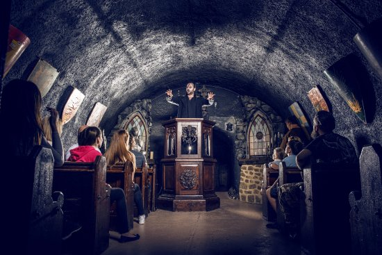
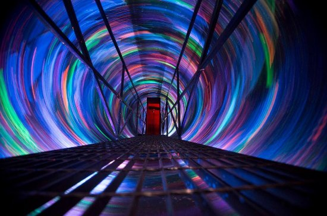
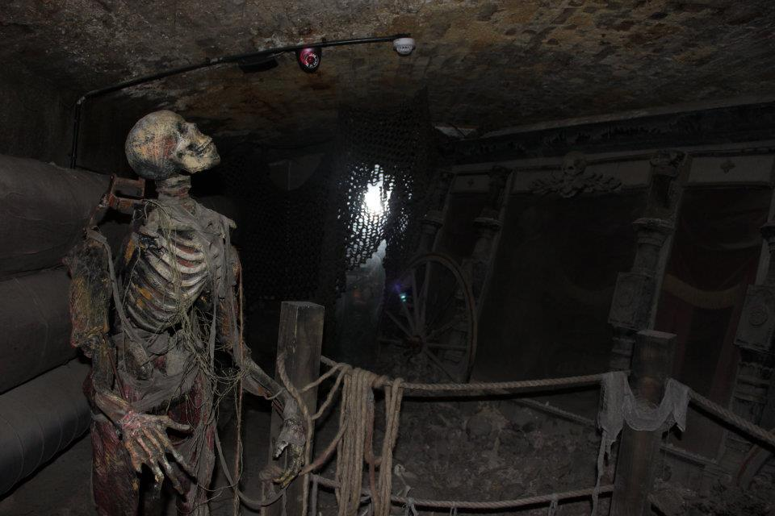

The Haunted Site of The London Tombs, Crowned the UK's Scariest Attraction
This Location Offers:
Child, Student, and Senior Tickets
The Guardian Angel Tour: No Jumpscares for Children
Won the Award for Best Horror Attraction in the World
Ticket Rates:
Adult – £27.95
Child – £22.50
Student / Concession- £25.95

Inside the London Tombs, the actors scare the audience with London's history of witch trials, executions, and blasphemy.

Before entering the London Tombs, there is a "vortex" that leads the audience into the past. It makes it feel as if you are actually experiencing the London Tombs in the past.

Once inside the London Tombs, there are skeletons and skulls scattered around to scare the audience. Different lightings and scents are used to make the situation scarier, and the actors even jump out at you!
Reviews:
"This was the best scare house I have ever been to!"
"The actors were so good! It felt so real!"
"I loved the art and the sets; as an artist I was extremely impressed."